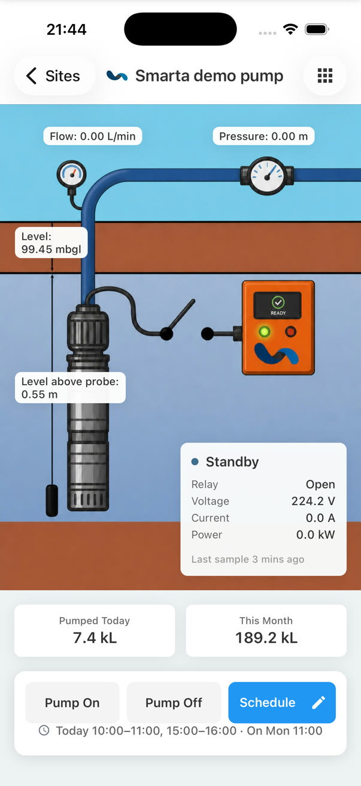

01
Remote control
Start or stop compatible pumps from the secure web or mobile app, with the site’s protection logic still in charge.
Permission controlledRemote water infrastructure · Southern Africa
Smarta connects pumps, boreholes, reservoirs and water-quality sensors to a secure live view—so you can control equipment, catch problems early and plan with real data.

active sites monitored
telemetry records captured
visibility and alerts
mobile platforms, one system
Field to phone
Smarta brings electrical, hydraulic and operational information together. See what is happening now, understand what changed, and act before a small warning becomes a long interruption.
01
Start or stop compatible pumps from the secure web or mobile app, with the site’s protection logic still in charge.
Permission controlled02
Read pump state, electrical supply, flow, pressure and water level at a glance—according to the sensors fitted on site.
Electrical + hydraulic03
Flag dry running, burst pipes, power problems, lost communication and operating conditions that fall outside your limits.
Push, email and configured channels04
Explore telemetry, daily summaries and operating history to spot drift, compare periods and support maintenance decisions.
Trends + event history05
Set recurring pump schedules and review today’s plan without travelling to the installation for routine switching.
Repeatable operation06
Turn operating data into scheduled reports and exports for water accounting, performance review and planning.
PDF, spreadsheet and custom reporting

Hardware that earns its place
Smarta is not a dashboard looking for a problem. It is a field-tested link between real control panels, sensors and the people responsible for keeping water available.
Assess the siteWe review the pump, panel, sensors, connectivity and protection already in place.
Connect what mattersThe installation is configured around the measurements and controls your operation needs.
Support the outcomeSmarta works with distributors, technical partners and users to help diagnose issues and plan maintenance.
Four connected use cases
Smarta is configured around what the site must protect, measure and operate—not around a one-size-fits-all screen.
Remote control, pump protection, flow, pressure, water level, power and performance history for individual sites or a distributed fleet.
See stored-water level, inflow or outflow and pump state remotely, with alarms when the system moves outside its expected range.
A dedicated monitoring view combines two field loggers into one quality picture, with calibrated readings, operating limits and device-health visibility.
Remote household and bulk water metering for residential estates, with leak alerts, consumption analytics, resident access and billing workflows.
Visit Smarta EstateSmarta Mobile
See every pump and reservoir, open a live site view, inspect telemetry, review daily performance, manage alarms and issue authorised commands from one purpose-built app.


How it works
From the control panel to the person making the decision, every part of Smarta has a clear job.
A Smarta field controller connects to the panel and configured water, electrical or quality sensors.
Operating data is transmitted to the Smarta platform using the connectivity selected for the site.
Authorised users get live views, alerts, history, reports and controls on the web and mobile app.
In the field
Every image below comes from a working Smarta context—from a solar borehole point to multi-pump plant rooms and the controller inside the panel.


About Smarta
Smarta was built around a practical idea: give the people responsible for water the information and control they need, wherever they are.
We are based in Gauteng and support water infrastructure across Southern and Sub-Saharan Africa. Our team works alongside distributors, technical partners and users to connect the field installation, software and ongoing operational support.
Straight answers
Need a site-specific answer? Send the team a photo of your panel and a short description of the system.
Ask about your siteDepending on the installation and connected sensors, Smarta can monitor pump state, electrical supply, current, power, pressure, flow rate, pumped volume, borehole water level, reservoir level and selected water-quality measurements.
Yes. Compatible Smarta pump installations support permission-controlled remote start and stop commands from the web and mobile applications, subject to the site’s configured electrical and hydraulic protection.
Often, yes. Smarta is typically integrated with an existing control panel and available sensors. A site assessment confirms the controls, sensing, communications and protection needed for each installation.
Yes. Customers can use the secure Smarta web platform, and Smarta Mobile is available for iOS and Android.
Smarta manages pumps, boreholes, reservoirs and water infrastructure. Smarta Estate is a separate Smarta product for remote household and bulk water metering, leak alerts, consumption analytics and estate billing.
Smarta is based in Gauteng, South Africa, and supports installations across Southern and Sub-Saharan Africa.
Start with the site
Tell us what you pump, where it is, and what you need to know or control. We’ll help define the right monitoring and management scope.
Speak to the Smarta team
info@smarta.co.za→ Start a WhatsApp conversationBased in Gauteng · Supporting Southern & Sub-Saharan Africa